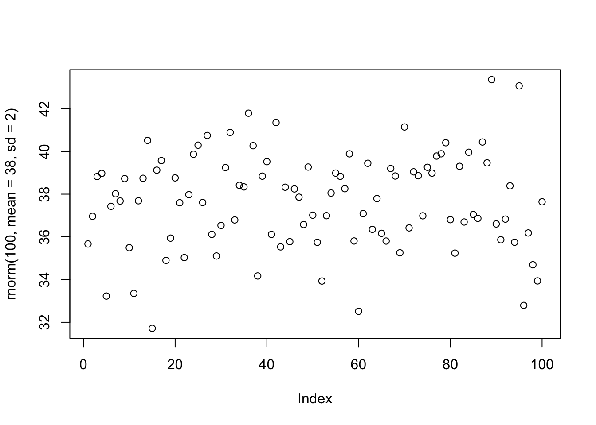

The following is in response to our 2nd week’s assignment. Using the provided list of functions I will define each and demonstrate the function in use.
help(plot)?distributionls()## character(0)dir()## [1] "_site.yml" "docs"
## [3] "images" "index.Rmd"
## [5] "Intrinsics_cache" "Intrinsics.Rmd"
## [7] "Journal_cache" "Journal_files"
## [9] "Journal.Rmd" "LabJournalWebsite.Rproj"
## [11] "Links.Rmd" "README.md"list.files()## [1] "_site.yml" "docs"
## [3] "images" "index.Rmd"
## [5] "Intrinsics_cache" "Intrinsics.Rmd"
## [7] "Journal_cache" "Journal_files"
## [9] "Journal.Rmd" "LabJournalWebsite.Rproj"
## [11] "Links.Rmd" "README.md"red<- seq(1,20,2)
save(red,file="seq.rmd")load("seq.rmd")?datalibrary() –
read.table() –
read.csv() –
scan() –
print() –
cat() – concatenates two separate strings
AL <-cat("ana",".","lakshin")## ana . lakshin?write.tablex[[“name”]] column named “name” –
x$nameid. –
as.data.frame(x) –
as.numeric(x) – change the composition of a vector into numbers (if possible)
dod <- c(5,"4",7)
as.numeric(dod)## [1] 5 4 7as.logical(x) –
as.character(x) –
felix <- seq(3,56,1.2)
max(felix)## [1] 55.8min(felix)## [1] 3range(felix)## [1] 3.0 55.8s_u <-sum(felix)
s_u## [1] 1323m_ <-mean(c(3,7,12,99,23,54))
m_## [1] 33nad<- seq(1,50,3)
z<- median(nad)
z## [1] 25?varsd() – computes standard deviation
cor() – computes correlation
round() –
abs() –
t() –
diag() –
rowSums() –
colSums() –
rowMeans() –
colMeans() –
apply() –
aggregate() –
paste() –
strsplit() –
toupper
hist()
plot()
plot(rnorm(100,mean=38,sd=2))